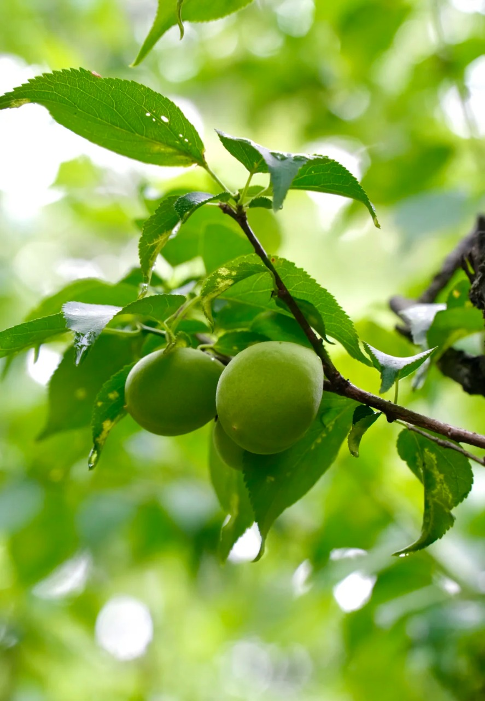
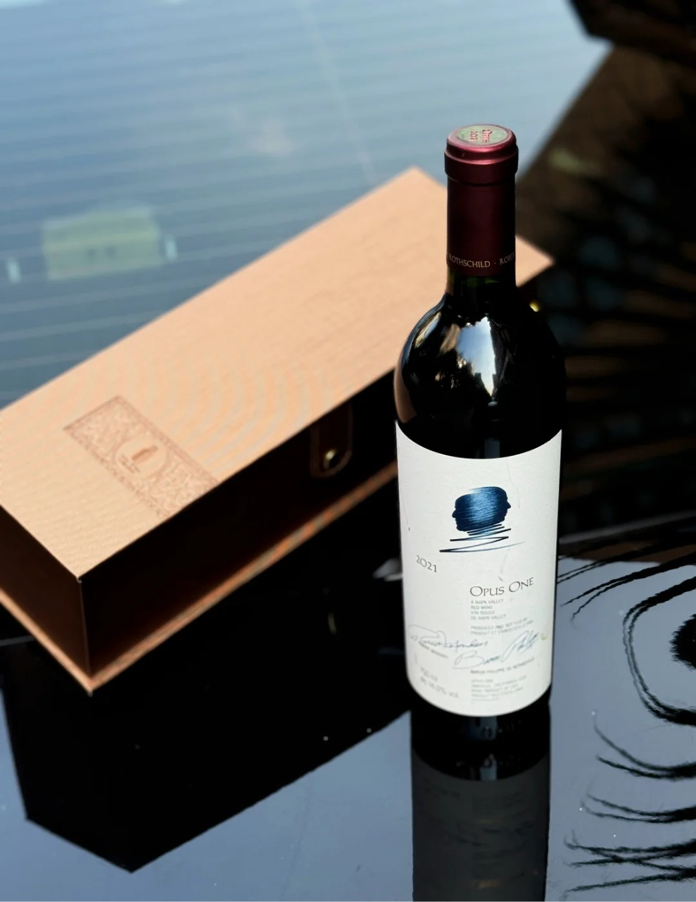
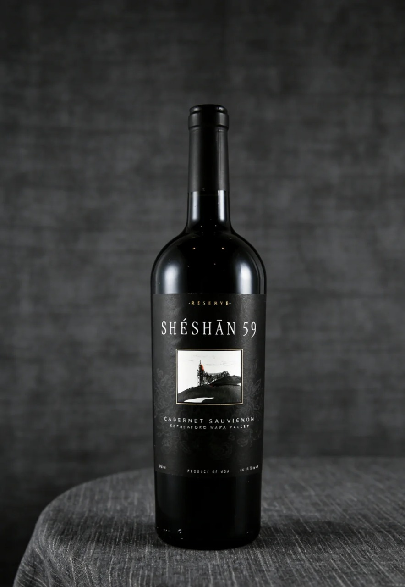
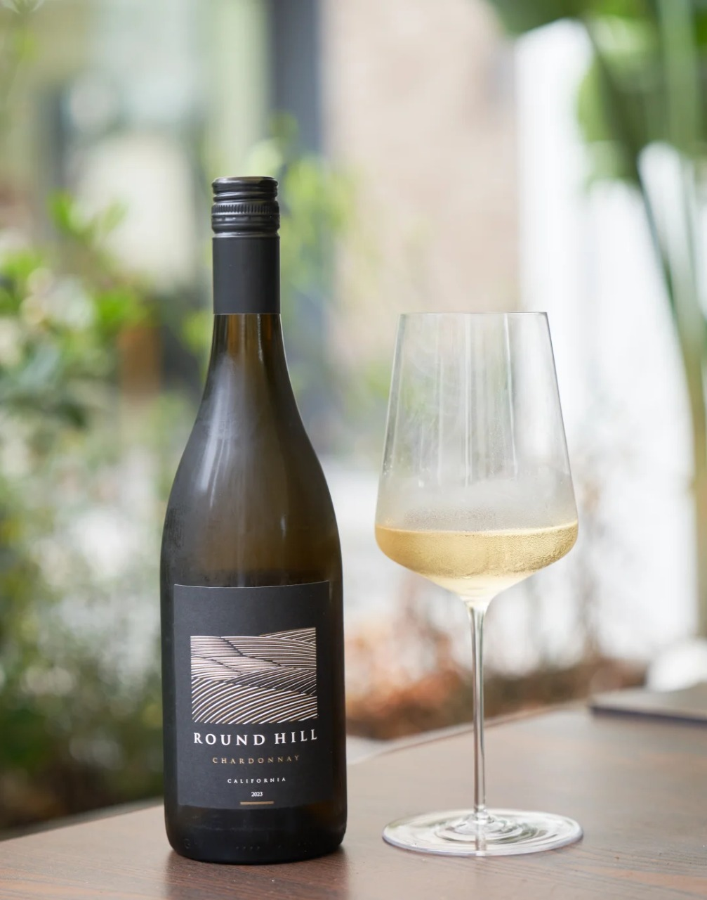
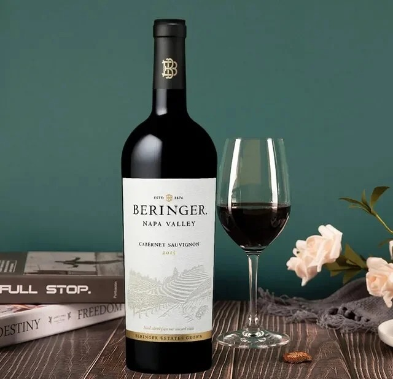
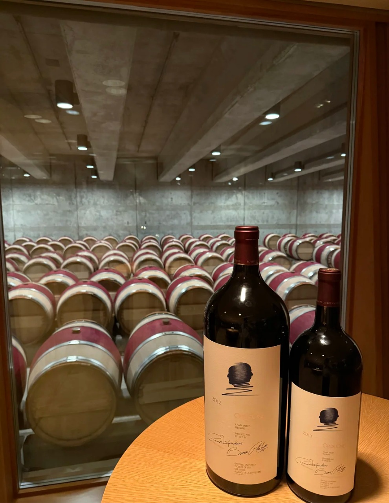
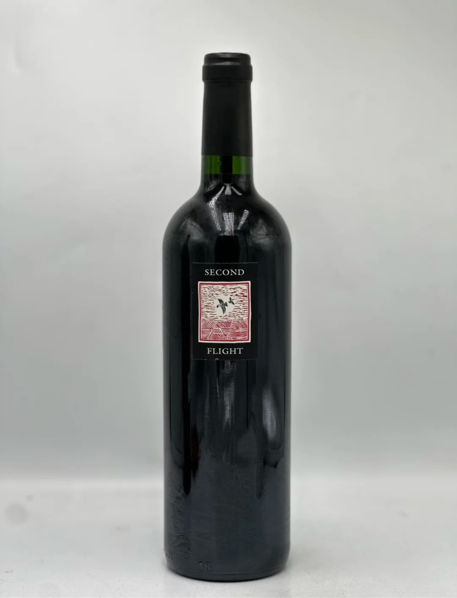
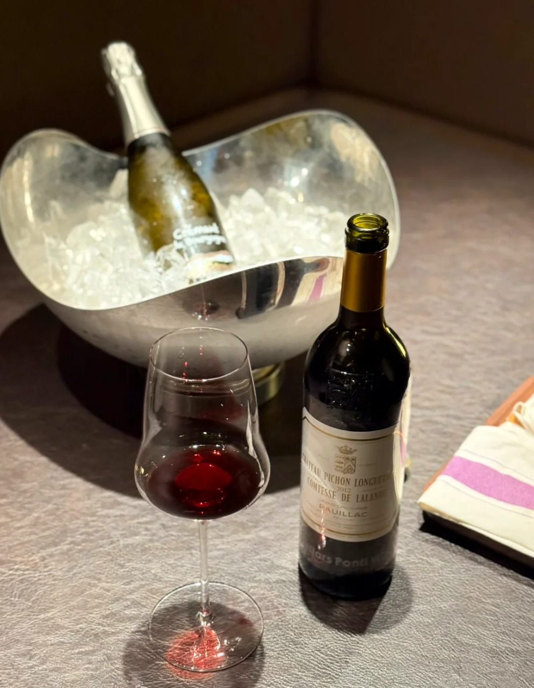

Classic Series
經典青梅酒
清爽順滑、果香清晰，適合日常微醺、餐後分享與更輕鬆的飲用節奏。
Age Confirmation
本網站內容僅供年滿 18 歲人士瀏覽。
請確認你已達所在地區法定飲酒年齡。
對梅見而言，青梅酒不只是酒體本身，而是一種從原料出發、經時間釀成，最終走進餐桌與人際分享的體驗總和。
同時，我們也希望把更豐富的飲酒場景延伸至葡萄酒選品，讓品牌在青梅酒之外，帶來更多值得被分享的風味。

原料不是背景，而是品牌的出發點。成熟青梅的酸、香、汁水與果肉狀態，共同決定了最終酒體的清爽度、純淨感與層次。

我們重視果實的真實性，也重視採摘時節。青梅不是抽象的符號，而是梅酒一切香氣與口感的源頭。
從枝頭到酒杯，青梅的鮮亮果酸、自然果香與乾淨輪廓，正是梅酒最核心的風味基礎。
這份來自原料本身的真實感，也是品牌建立質感與信任感的第一步。

從挑選、處理、浸泡到熟成，工藝不是為了炫耀，而是為了讓青梅原有的酸香被更穩定、更細緻地保留下來。
梅見的產品不只停留在酒體本身，也延伸至設計、場景與分享方式，形成更完整的品牌體驗。
Classic Series
清爽順滑、果香清晰，適合日常微醺、餐後分享與更輕鬆的飲用節奏。

Seasonal Edition
以更鮮明的節慶識別與視覺語言，讓限定產品成為分享與收藏的一部分。

Gift Collection
結合東方紋樣、色彩與送禮需求，呈現更完整的節日心意與品牌合作體驗。
除了青梅酒，我們亦提供不同風格的葡萄酒選品，涵蓋經典紅酒、清新白酒、收藏型酒款與送禮場景，讓產品結構更完整，也更適合全球市場合作。

Featured Red Wine
來自 Napa Valley 的代表性紅酒，酒體飽滿，帶有成熟黑莓、香料與橡木層次，適合作為高端收藏、商務送禮與正式餐敘的焦點酒款。

Reserve Cabernet
以 Cabernet Sauvignon 為主調，風格沉穩而有結構，帶有黑醋栗、可可與些許煙燻感，適合搭配牛排、燉肉與風味較濃郁的餐食。

Crisp White Wine
清新柔和的白酒風格，帶有柑橘、白花與淡淡果香，口感乾淨俐落，適合搭配海鮮、沙拉、白肉料理與輕鬆午后時光。

Classic Napa Red
經典 Napa Valley 紅酒代表，果味集中，帶有黑櫻桃、李子與香草氣息，口感平衡，適合日常餐酒搭配，也適合零售與餐飲渠道推廣。





不論是青梅酒，還是精選葡萄酒，都可以出現在朋友聚餐、家庭餐桌、節慶分享與個人微醺時刻。它們不必被過度定義，卻能自然融入不同市場與不同生活方式之中。
一杯適合的酒，能讓一頓飯更完整，也能讓分享變得更自然、更容易被記住。
品牌的感受不只來自味道，也來自視覺、節氣、器物與文化的共同作用。梅見希望把這份來自東方的細膩，轉化為更當代的品牌語言。

梅花不只是裝飾元素，也象徵節氣、清雅與時間感。當器物、花影與果實一起被放進品牌視覺之中，品牌就不只呈現產品，也呈現一種更完整的東方生活方式美感。


歡迎零售渠道、餐飲合作、品牌聯名與全球市場洽詢。如需產品資料、合作方案或批發資訊，歡迎與我們聯絡。